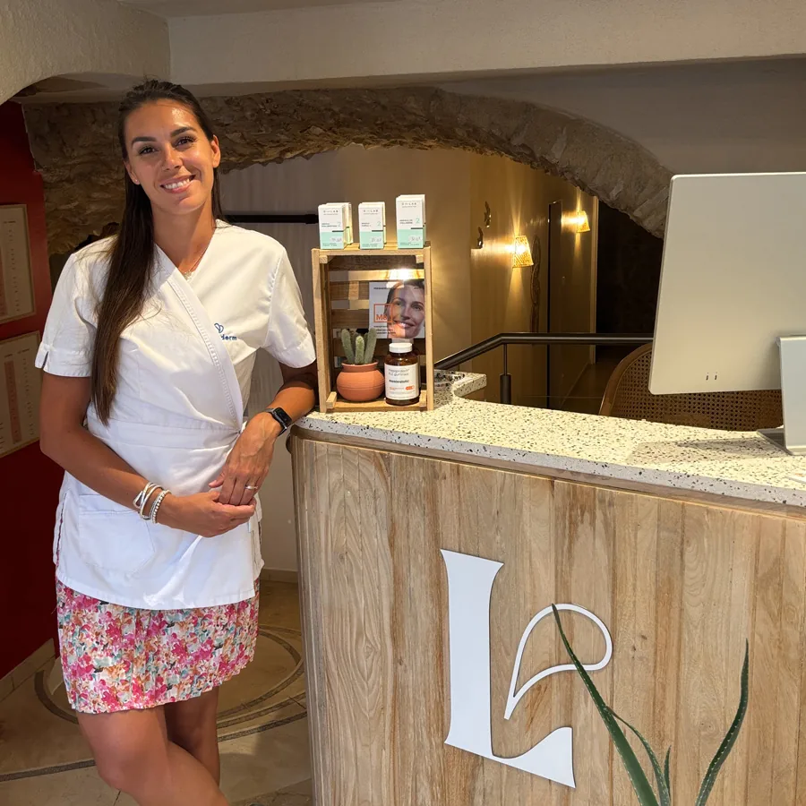
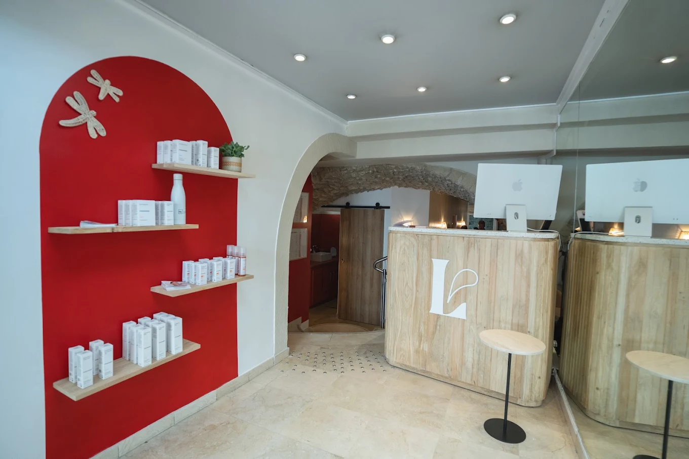
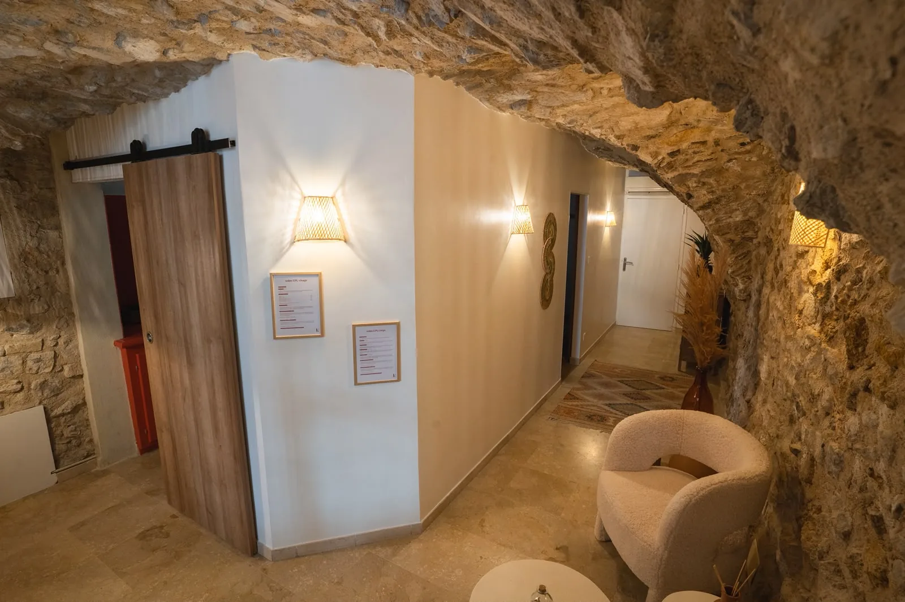

LUMIA est l'institut de Margaux PANIZ, infirmière diplômée d'État et esthéticienne, à Manosque, dans les Alpes-de-Haute-Provence. Après plusieurs années au service des patients, elle a choisi de mettre la précision et l'écoute du soin infirmier au service de la beauté : épilation laser, soins du visage, LPG et soins dépigmentants. L'institut a ouvert à l'automne 2024 et s'est construit autour d'une idée simple, vous accompagner sur-mesure, avec la même interlocutrice à chaque rendez-vous.

Le fil conducteur : du soin à l'esthétique
Margaux est infirmière diplômée d'État (2015-2018). Elle s'est ensuite formée à l'épilation laser (Formation Socle LASER, 2024), aux soins du visage EsthéSkin et Corpoderm (2025), puis au protocole COSMELAN de Mesoestetic (2025). Elle a obtenu le CAP Esthétique en 2026 et s'est formée au microneedling la même année. Cette formation continue se retrouve dans sa façon de travailler : questionnaire de santé, consentement éclairé, fiche de suivi. C'est la rigueur du soin appliquée à votre beauté, et c'est le cœur de la confiance que vous accordent ses clientes et clients.
L'institut
L'institut se trouve au 10 Bis avenue Jean Giono, à côté de l'opticien ATOL, dans un cadre cocon aux arches de pierre et aux matières chaleureuses. On y travaille avec des marques exigeantes, Mesoestetic et LPG, pour les cosmétiques corps, les compléments alimentaires et le visage, et un matériel professionnel : un laser diode Leaseir, la machine EsthéSkin pour les soins du visage, la LPG Cellu M6 Alliance et le PEN MESOESTETIC pour le soin microneedling.

Des qualifications datées et vérifiables
La transparence fait partie du soin. Voici les repères de formation de la praticienne.

- 2015 à 2018 : diplôme d'État d'infirmière.
- 2024 : Formation Socle LASER (épilation laser à visée non thérapeutique).
- 2025 : formation soins du visage EsthéSkin (Corpoderm).
- 2025 : formation au protocole COSMELAN de Mesoestetic.
- 2026 : CAP Esthétique.
- 2026 : formation au microneedling (micro-stimulation) avec Mesoestetic, et formation hygiène et salubrité.
L'attestation de formation à l'épilation laser à visée non thérapeutique, prévue par le décret n° 2024-470 du 24 mai 2024, a été délivrée le 21 janvier 2026 par ELEGANCE ACADÉMIES, organisme certifié Qualiopi (n° d'activité 93.06.04806.06). Elle est valable jusqu'au 20 janvier 2031 et affichée à l'institut. Découvrez nos prestations : épilation laser, soins du visage, LPG et COSMELAN.